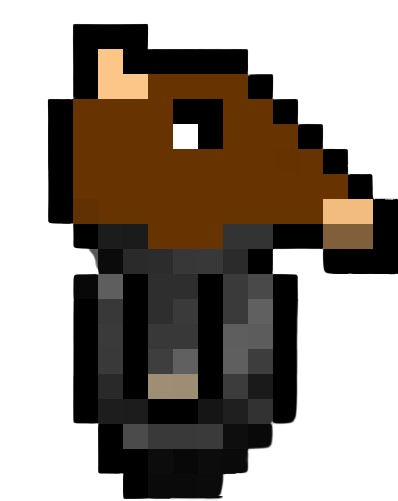
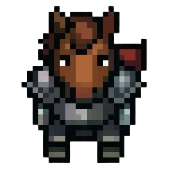
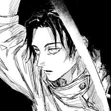

About UnderVeil
A story-driven pixel-art roguelike, made by Framer and Vope from our headquarters in Lazarim.
Our Story
UnderVeil began as a small school project. As time went on and our passion grew, it became something much bigger than we ever imagined.
Making it tested everything: our skills, our imagination, how we adapt when things go wrong. We couldn't have picked a better idea. Creating the kind of game we loved as kids is an amazing feeling. It's more than just a game; it's our game.
Drawn in Aseprite (opens in a new tab), with sounds from Freesound.org (opens in a new tab), and published on itch.io (opens in a new tab).

First design
TodayOur Team

Framer
Main Developer

Vope
Co-Developer and Backer
Frequently Asked Questions
What is UnderVeil?
UnderVeil is a story-driven 2D pixel-art roguelike for Windows. You fight your way down through procedurally generated dungeons, face godlike bosses and a maddened antagonist, and try to put an end to the flame that has been burning for far too long. Challenging combat, strategic item choices and a story shaped by your decisions make every run different.
How does the roguelike system work?
Each run is procedurally generated and death is permanent: when you fall, you start a new run. But nothing is wasted. The Roman gods grant Omens, buffs that last for the rest of a run. Rebuilding the broken Greek Statues in the hub earns permanent upgrades. And the resources you bring back let you craft supplies, hire hunters, trade for the Merchant's potions and unlock new skills. Every attempt takes you a little deeper.
What platforms can I play UnderVeil on?
UnderVeil is currently available only on Windows. We'd love to bring it to Linux, Mac and consoles in the future, but with our budget and experience we're focusing on making the Windows version the best it can be first. Check the system requirements.
Is UnderVeil free?
The demo is free: it lets you play part of the game before you decide to buy. The full game will be available for purchase. Get the free demo.
Can my PC run UnderVeil?
Very likely. UnderVeil is built to run on modest hardware: the minimum is a 1.8 GHz dual-core processor, 2 GB of RAM and DirectX 9 graphics, and it needs only 200 MB of space. See the full requirements.
Can I play UnderVeil offline?
Yes. UnderVeil is completely offline and never needs an internet connection.
Does the game have multiple endings?
Yes. UnderVeil will have multiple endings based on your choices: different upgrades, different weapons and different paths lead to your own ending.